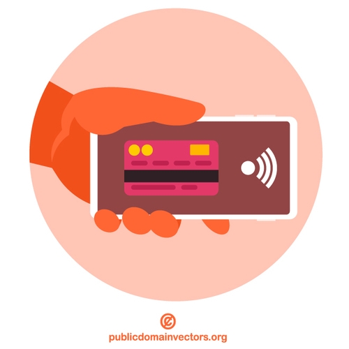

Internet es el medio de comunicación actual. Las búsquedas en Internet abren la puerta a un mundo más amplio de información. Se realizan muchos ataques destinados a obtener información almacenada en los servidores. Pero, ¡cuidado! a veces la información forma parte de un sistema que atrapa a las personas en una realidad alternativa, porque la web también contraataca.
Internet es el medio de comunicación actual. Las búsquedas en Internet abren la puerta a un mundo más amplio de información. Se realizan muchos ataques destinados a obtener información almacenada en los servidores. Pero, ¡cuidado! a veces la información forma parte de un sistema que atrapa a las personas en una realidad alternativa, porque la web también contraataca.
Pero además, lo más importante desde el punto de vista de la programación es que el acceso a toda esta información en la web requiere desarrollar aplicaciones para la ella. Aplicaciones que comprendan el amplio espectro de herramientas que maneja toda la sociedad: las diferentes tecnologías de SSOO, los diferentes tipos de dispositivos, las distintas redes de conexión...
La programación web, como puedes comprobar en los ejercicios a continuación, está más presente que nunca a nuestro alrededor. ¿No sería fascinante conocerla para comprender todo a lo que accedemos?
2. La web contraataca
1. Líderes de la web
Existen muchos programadores y programadoras web que influyen en el desarrollo de los portales de conocidas compañías. Una de ellas es Belén Albeza: En la actualidad trabaja en Mozilla, en el equipo DevTools de Firefox. Ha tenido la oportunidad de trabajar en desarrollo web así como en la industria de los videojuegos (para iOS y Facebook). En la actualidad escribe mucho JavaScript, y es muy entusiasta a la hora de defender buenas prácticas de HTML/CSS. Le gusta dar charlas en eventos, conferencias y meetups sobre videojuegos y desarrollo web. ¡Escuchad su propuesta!
Responded en grupo a las siguientes preguntas consensuando las diferentes opiniones y explicaciones. Posteriormente, exponed a la clase las distintas posibilidades que habéis debatido:
- Belén Albeza habla de desarrollar un videojuego de navegador en 48 horas. ¿Cómo se organiza para ello?
- Se habla de desarrollar videojuegos de navegador. ¿Por qué crees que se llaman así?
- ¿Crees que estos videojuegos necesitan ser instalados?¿Por qué?
- ¿Pensáis que su funcionamiento depende del SO (plataforma)?¿De qué tecnología dependerán si no es así?
- A veces se indica que para ejecutar el videojuego en el navegador es necesario un plugin, ¿sabéis qué es un plugin? Si no es así, buscad un poco de información en Internet y elaborad una pequeña explicación.
- La mayoría de estos juegos se desarrollan con el propio lenguaje de las páginas web: HTML y algún lenguaje de script, como Javascript, pero antes se utilizaba también Flash para crearlos. ¿Sabéis si los navegadores actuales dan soporte a esta tecnología Flash?¿Conocéis por qué ha dejado de utilizarse?
- ¿Sabes qué es poner un juego (o aplicación) en producción?
Recuerda que si lo necesitas puedes activar los subtítulos del video.
Motus dice ¿Crear un videojuego?
¿Y a ti?¿Te ha animado a investigar sobre el tema y crear uno?
¿Cómo te has sentido en este ejercicio? ¿Ha sido emocionante crear un videojuego? Una actividad de clase puede hacernos sentir de muchas maneras: insegura, feliz, triste, orgulloso…
Cómo nos sentimos ante una tarea hace que contestemos de una forma diferente. Por eso te invito a que, cuando te enfrentes a una tarea, primero pienses en qué te hace sentir a ti y a los demás para poder afrontarla mejor.
Conocer tus emociones y las de los demás te ayudará a:
- Pedir ayuda porque en equipo siempre se trabaja mejor.
- Relajarte para contestarla utilizando técnicas de relajación.
- Pensar en cómo podrás contestarla antes de hacerlo para planificar bien tu trabajo.
¡Haz caso a tus emociones!
2. La web sabe dónde estás
Solución
3. ¡Me atreveré con una web!
Vas a ver un breve vídeo que tiene el objetivo de familiarizarte con el diseño web y motivarte para que compruebes que no hacen falta conocimientos previos para adentrarte en este mundo de creación de páginas web que terminará con la creación de la web que es el reto de este recurso.
Responde después a las preguntas que acompañan, que tiene el objetivo de que fijes tu atención en determinados aspectos del vídeo:
Recuerda que si lo necesitas puedes activar los subtítulos del video.
- El sencillo proyecto que propone, ¿de cuántas páginas consta?
- En el vídeo puedes oir que utiliza la expresión diseño responsive o adaptativo, ¿qué crees que significa?
- ¿Por qué piensas que se ha podido convertir esto en algo tan importante hoy en día?
- También indica que en la página de contacto incluye Google Maps. ¿Has visto esta práctica en alguna web que has consultado?¿Qué otros servicios externos has observado que se incluyen en otras webs?
- ¿Qué tecnologías nombra para crear la página?¿Conoces o/y sabrías explicar alguna de ellas?
Clavis dice De actualidad
Con ejercicios como este te habrás dado cuenta de que es muy importante conocer e interpretar correctamente lo que hay que realizar en la tarea y pensar sobre las habilidades que debes poner en juego para resolverla.
Recuerda bien esta información porque verás más delante en el tema que todo lo que nombra es clave ya en el diseño de una web.
¡Estoy seguro de que lo harás genial!
4. El imperio de las APP
Probablemente hayas oído hablar el término de aplicación nativa, ¿pero qué es exactamente? En términos generales, es una aplicación que ha sido específicamente desarrollada para el sistema operativo en el que corre. Pero ahora gracias a la programación web...han aparecido las aplicaciones que no dependen de ningún sistema operativo, sino que toman lugar en una página web en un navegador.
Las aplicaciones web progresivas están a medio camino entre las dos anteriores: son básicamente páginas web, pero mediante el uso de ciertas tecnologías se comportan más como aplicaciones normales que como aplicaciones web.
¡Descubre qué las caracteriza!
5. Click to pay ¿amenaza o liberación para nuestras cuentas?
El desarrollo de la programación web ha permitido el rápido desarrollo del comercio electrónico. Se han desarrolado múltiples plataformas de pago programadas mediante lenguajes de programación web.
- ¿Qué métodos de pago conoces o has utilizado para realizar compras en Internet?
- ¿Has necesitado instalar algún programa o aplicación para utilizarlos?
- Casi todas las webs que venden por Internet hacen uso de un carrito de la compra, ¿lo conoces? ¿Sabrías explicar qué es un carrito de la compra web?
- ¿Crees que los nuevos sistemas de pagos on line nos favorecen en nuestra vida diaria o nos perjudican?¿Por qué?
Obra publicada con Licencia Creative Commons Reconocimiento Compartir igual 4.0